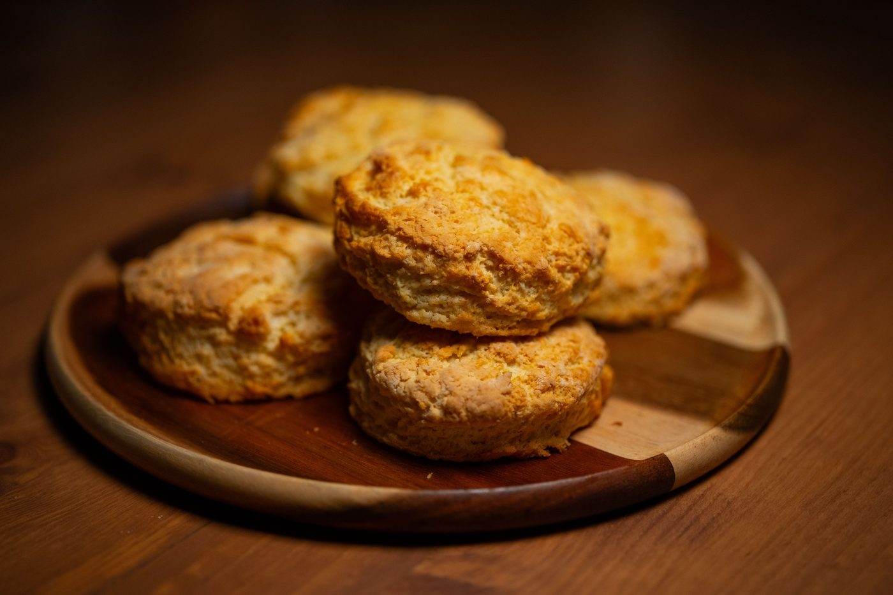
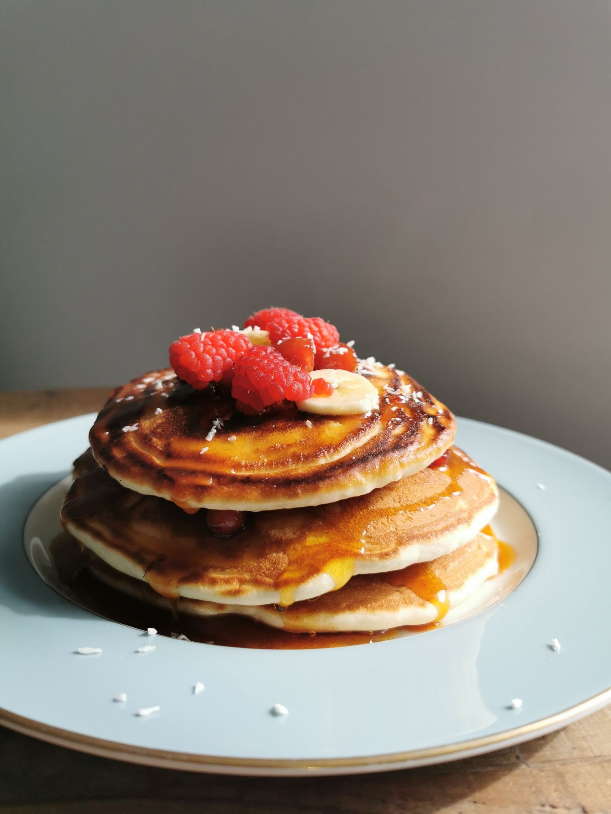
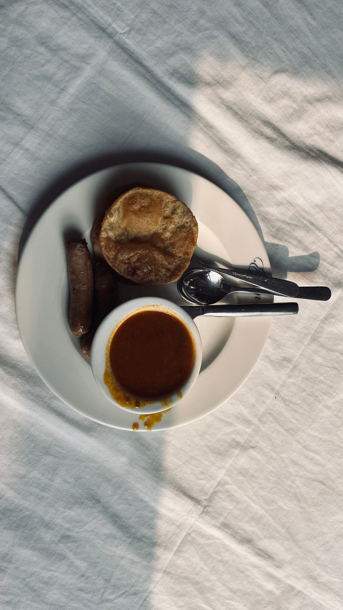

Services at Southside Cafe
A family-owned Southern Louisiana restaurant in Slidell, cooking the way the family grew up cooking, with po' boys, gumbo, and all-day Sunday brunch.
Services
Po' boys
Traditional po' boy sandwiches on French bread, including fried shrimp, roast beef, and the Peacemaker.
Seafood and chicken-and-sausage gumbo
Seafood gumbo and chicken-and-sausage gumbo.
Muffuletta
Muffuletta from the Slidell menu.
Yellowfin tuna remoulade
Yellowfin tuna remoulade, a house favorite.
Build-your-own burgers
Build-your-own burgers with a choice of meat, bun, toppings, and condiments.
Salads
Salads on the cafe menu.
Steaks
Steaks on the cafe menu.
Seafood platters
Seafood platters, including a fried seafood platter for two.
All-day Sunday brunch
Brunch served all day on Sunday.
Happy hour
Happy hour Monday through Friday 3:00 PM to 7:00 PM and all day Sunday.
Catering and large gatherings
Catering options for events, with room for large gatherings, banquets, anniversaries, and birthdays.
Gallery



All gallery photos are stock photos, labeled as such. They show the kind of work and setting described on this page, not this business.
Contact
Southside Cafe serves Slidell, LA. Questions? Call +1 985-643-6133.